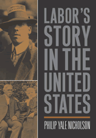

<body bgcolor="#FFFFFF" text="#000000" link="#0000FF" vlink="#CC0000" alink="#CC0000"><center><hr width="350" size="1" align="center" noshade>A comprehensive, readable history of work in America<hr width="350" size="1" align="center" noshade><p><a href="https://cdcshoppingcart.uchicago.edu/Cart/ChicagoBook.aspx?ISBN=9781592130207&&PRESS=temple" target="_top">Buy this book!</a> | <a href="https://cdcshoppingcart.uchicago.edu/Cart/Cart.aspx?PRESS=temple" target="_top">View Cart</a> | <a href="https://cdcshoppingcart.uchicago.edu/Cart/Cart.aspx?PRESS=temple" target="_top">Check Out</a></p><p></p></center><!--none//--><h1>Labor's Story in the United States</h1>
<h3>Philip Yale Nicholson</h3>
<P>cloth 1-59213-020-8 $85.50, Feb 04, <FONT COLOR=#990033>Available</FONT>
<br>paper 1-59213-239-1 $43.95, Feb 04, <FONT COLOR=#990033>Available</FONT>
<BR> 376 pp
7x10
7&nbsp;figures 8&nbsp;halftones
</P><BLOCKQUOTE><I>"We have long needed a lively and intelligent history of the labor movement in the United States, and Philip Yale Nicholson gives us just that. He provides a rich historical context, and a refreshing class consciousness. I believe this book will be invaluable in educating a new generation about a much neglected and crucial part of the nation's history."</i>
<br>&#151<b>Howard Zinn</b>, author of <i>A People's History of the United States</i><i></I></BLOCKQUOTE>
<p>In this, the first broad historical overview of labor in the United States in twenty years, Philip Nicholson examines anew the questions, the villains, the heroes, and the issues of work in America. Unlike recent books that have covered labor in the twentieth century, <i>Labor's Story in the United States</i> looks at the broad landscape of labor since before the Revolution.
<p>In clear, unpretentious language, Philip Yale Nicholson considers American labor history from the perspective of institutions and people: the rise of unions, the struggles over slavery, wages, and child labor, public and private responses to union organizing. Throughout, the book focuses on the integral relationship between the strength of labor and the growth of democracy, painting a vivid picture of the strength of labor movements and how they helped make the United States what it is today. <i>Labor's Story in the United States</i> will become an indispensable source for scholars and students.
<BR>&nbsp;<h2>Excerpt</h2><P>Excerpt available at <a href="http://www.temple.edu/tempress">www.temple.edu/tempress</a></p>
<BR>&nbsp;<h2>Reviews</h2>
<p><i>"This is a wonderfully comprehensive narrative of American labor, full of insight and shrewd judgments. It will be exceedingly useful in the classroom."</i>
<br>&#151<b>Nelson Lichtenstein</b>, University of California, Santa Barbara, and author of <i>State of the Union: A Century of American Labor</i>
<p><i>"Nicholson's history of labor is the story of the evolving dynamics of democracy and equality, and it could serve as a general history of the United States from the bottom-up perspective.... </i>Labor's Story in the United States<i> is balanced, thoroughly supported, and accessible to an undergraduate or popular readership. Equally important, it is written by a scholar who cares about the people whose story he tells."</i>
<br>&#151<b><i>WorkingUSA</i></b>
<p><i>"Nicholson's style is clear and readable, and students were especially engaged by his discussion of the power of capital to shape American culture.... [a] monumental work that prods us to consider the fate of labor and democracy."</i>
<br>&#151<b><i><a href="http://muse.jhu.edu/journals/labor_studies_journal/v030/30.3lloyd.html" target="new">Labor Studies Journal</a></i></b>
<p><i>"The strength of Nicholson’s account lies in an expansive definition of the working class which allows him to take into consideration both workplace and broader social forms of oppression and resistance. Providing a comprehensive...narrative of events, the book touches on each of the major strikes and labor organizations of significance throughout U.S. history, always keeping in mind concurrent political developments...[The book] Fill[s] a void in labor history by presenting the breadth of its struggles in one highly readable volume."</i>
<br>&#151<b><i>Science & Society</i></b>
<BR>&nbsp;<h2>Contents</h2><P>
<p>Preface
<br>1. European and Colonial Foundations to 1760
<br>2. Labor and Liberty in the Formation of the Nation, 1760-1830
<br>3. Great Contrasts: Factory and Field, Slavery and Democracy, Civil War, 1830-1865
<br>4. The Heroic Age of Labor; The Days of the "Martyrs and the Saints," 1865-1893
<br>5. Challenges and Responses, 1893-1913
<br>6. Bang, Boom, Bust: The Great War, Jazz Age, and Great Crash, 1914-1932
<br>7. Labor Valued: The New Deal and War, 1933-1947
<br>8. Constructing Consensus: Labor in the Cold War, 1945-1968
<br>9. Labor and the Corporate State, 1969-1992
<br>10. Labor's Recent Past and the Future of Democracy
</P><BR>&nbsp;<H2>About the Author(s)</H2>
<table><tr><td valign="top"><img src="/tempress/authors/1624_au.gif" height="90" width="75"></td><td width="100%" valign="middle"><p><b>Philip Yale Nicholson</b> is Professor of History at Nassau Community College and Adjunct Professor at the Cornell University School of Industrial and Labor Relations, Long Island Extension. He is the author of <i>Who Do We Think We Are? Race and Nation in the Modern World</i>.</P></td></tr></table>
<BR><H2>Subject Categories</H2>
<p><A HREF="/tempress/labor.html" TARGET="_top">Labor Studies and Work</a>
<BR><A HREF="/tempress/american.html" TARGET="_top">American Studies</a>
<BR><A HREF="/tempress/history.html" TARGET="_top">History</a>
</p>
<BR><h2 class="inpageheading">In the series</H2>
<P><I><a href="http://www.temple.edu/tempress/labor_crisis.html" onMouseOver="window.status='Click for other books in this series!'; return true;" onMouseOut="window.status=''; return true;" target="_top">Labor in Crisis</a></i>, edited by Stanley Aronowitz.
</p><p>The hope for a revived progressive movement in American politics and culture depends to a large extent on the possibility of a revived labor movement. This series will stimulate debate and discussion about the state of the American labor movement and its relation to the future of America by publishing short, provocative books that offer varying analyses and prescriptions for labor's revival as well as diverse assessments of its prospects. Books in the series will be relevant to a vision of the labor movement that presupposes movements and people who care about the chances of more equality, more democratic participation in the institutions of political and social life, and more power for those traditionally excluded from economic and political decision making.</p>
<p align="center"><a href="https://cdcshoppingcart.uchicago.edu/Cart/ChicagoBook.aspx?ISBN=9781592130207&&PRESS=temple" target="_top">Buy this book!</a> | <a href="https://cdcshoppingcart.uchicago.edu/Cart/Cart.aspx?PRESS=temple" target="_top">View Cart</a> | <a href="https://cdcshoppingcart.uchicago.edu/Cart/Cart.aspx?PRESS=temple" target="_top">Check Out</a></p><p><font face="Arial" size="1"><a href="copyright.html" onMouseOver="window.status='Web Copyright Policy';return true;" onMouseOut="window.status=''" title="Web Copyright Policy">&copy;</a> 2015 <a href="http://www.temple.edu" target="new" onMouseOver="window.status='Link to Temple University home page';return true;" onMouseOut="window.status=''" title="Link to Temple University home page">Temple University</a>. All Rights Reserved. http://www.temple.edu/tempress/titles/1624_reg.html</font></p>